ARERA Smart
ARERA Smart is an impartial energy service that helps people understand and reduce their energy use, with appliance-level monitoring, AI forecasts and comparisons with similar households.
- Role
- UX/UI Designer
- My part
- User research and experience design
- With
- Jacopo Bartoli, Clara Di Bella, Alessia Nicolini, Agostino Sanna
- Timeline
- Feb 2024 – Jul 2024
- Tools
- Figma, Adobe Creative Cloud
Problem
90% of Italians can’t read their energy bill properly. Without understanding what they consume, people can’t tell where they waste energy or how to use less.
Solution
An impartial energy service that makes consumption understandable to everyone, regardless of their technical background. It monitors energy appliance by appliance, uses AI to predict the upcoming month, and compares each user with similar households in the same area.
Analysis of the challenge
Many people use too much energy because they don’t understand how much they’re using.
Energy services rarely explain to people what they’re consuming. We started by researching how Italians perceive their bills, and the numbers showed how widespread the problem is.
Sources: Uniconsum, Innovaprogetti, Il Sole 24 Ore.
User needs
Asking “why” five times took us from the cost of energy to its real cause, and to four user needs.
Ideation
“How might we” questions broke the problem down into possible solutions.
How can wemake information about energy consumption understandable to users to help them adopt more informed and sustainable consumption habits?
How might we…
Feature
make users visualise and quantify the energy they consume?
Consumption divided by appliance, and comparison with similar users
change the experience of reading the bill?
A clear and engaging bill explanation
propose a more efficient energy model to optimise consumption?
Identifying inefficient appliances and forecasting future consumption
make users aware of how much renewable energy comes into their home?
Understand where the energy provider buys its energy from and distribute that data over the user’s consumption.
help inform users about the energy field?
AI could recommend, based on user preferences, which articles to read and on which topics to inform themselves.
Service
An impartial service that makes energy consumption understandable to everyone.
It’s designed for Italian bill holders who want to reduce their consumption and stay informed about the open market, regardless of their technical background or energy literacy.
Why ARERA
We imagined the service as part of ARERA, the Italian energy regulator, because it has no energy to sell.
Data & AI
We set the goal of each AI feature first, then the data it needed, then the algorithm. The main source is the 2G smart meter, which records consumption every 15 minutes.
Energy disaggregation
Shows what each appliance uses, from the meter’s total signal. NILM.
Clustering
Groups similar households to make the forecast more accurate. K-Means.
Forecasting
Predicts next month’s consumption, the number to beat. Deep neural network.
Interface
The first wireframes risked overloading people with data, which led to a metaphor.
The first screens organised the data but had no clear narrative. We went back to paper wireframes to simplify the information and make the visualisations clearer.
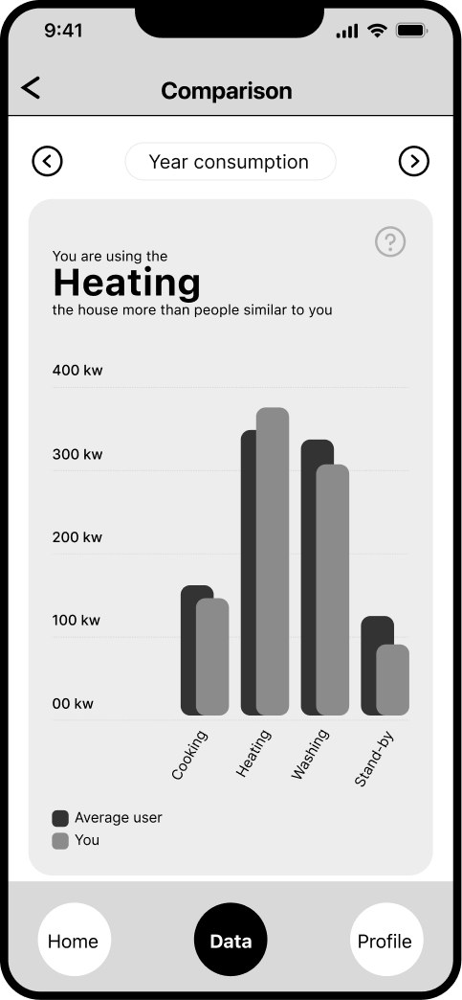
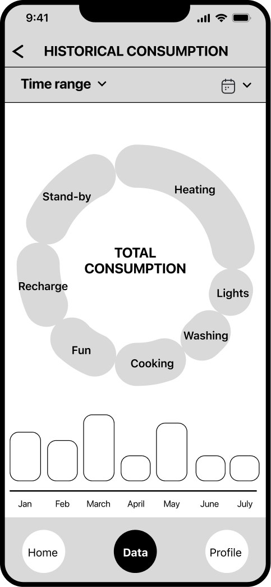
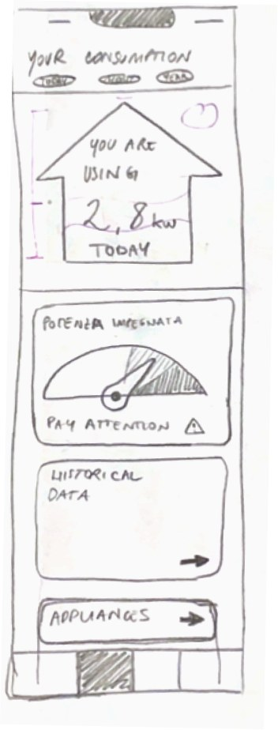
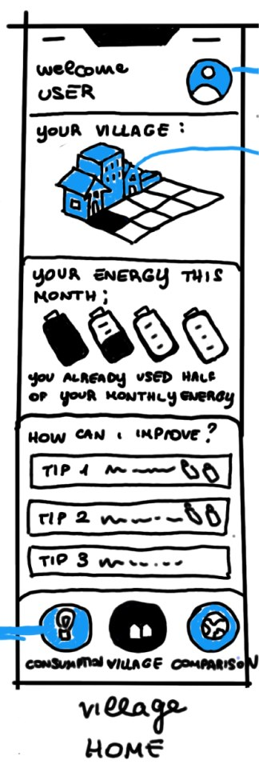
Homie
At mid-fidelity, the challenge was finding an engaging and intuitive scale for energy consumption. Homie is that scale: five statuses that show how your consumption matches the AI’s prediction.
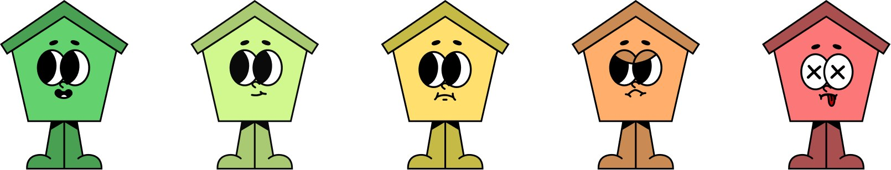
Design system
Cards, vibrant colours and the Homie metaphor simplify the complexity of energy data and make the app feel youthful.
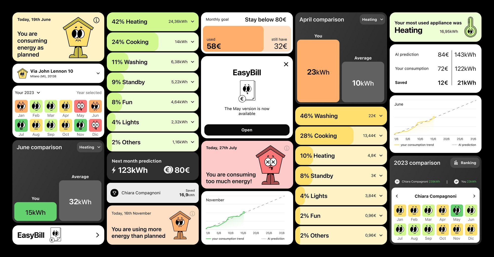
The app
User test
Tests with bill holders shaped the final interface.
Bill holders of different ages and levels of digital literacy completed the main tasks while thinking aloud. Besides the changes below, the EasyBill stories now follow the Instagram format more closely, and housemates have their own section in Profile.
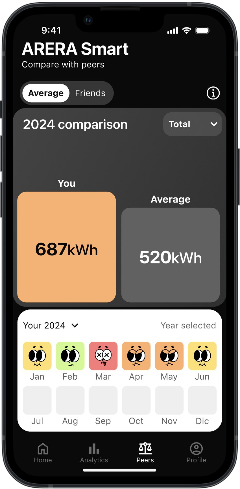
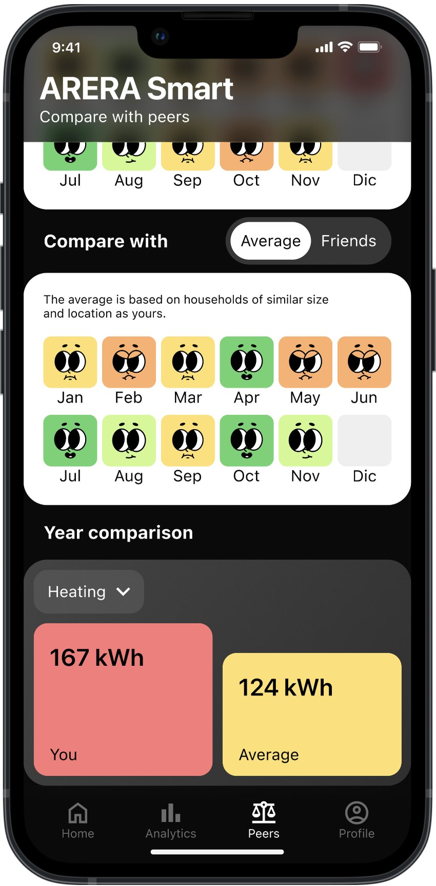
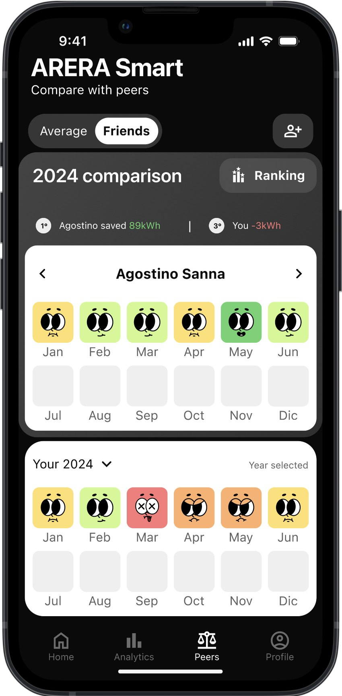
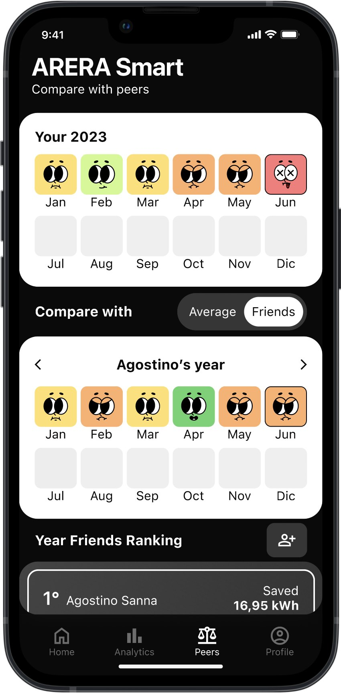
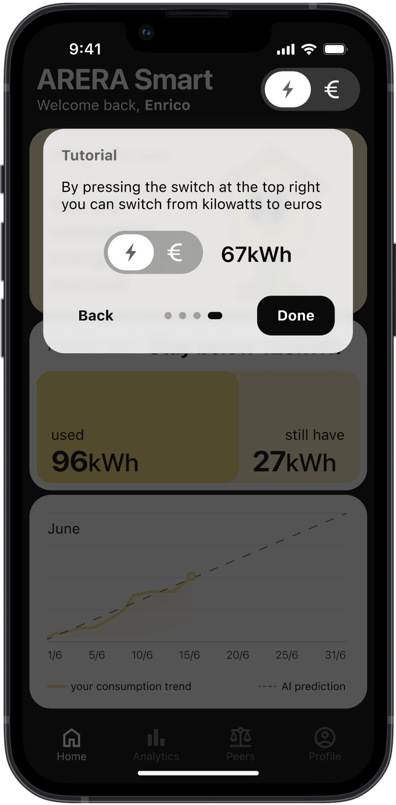
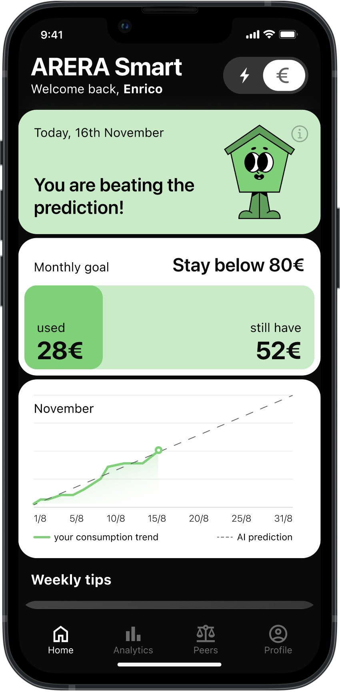
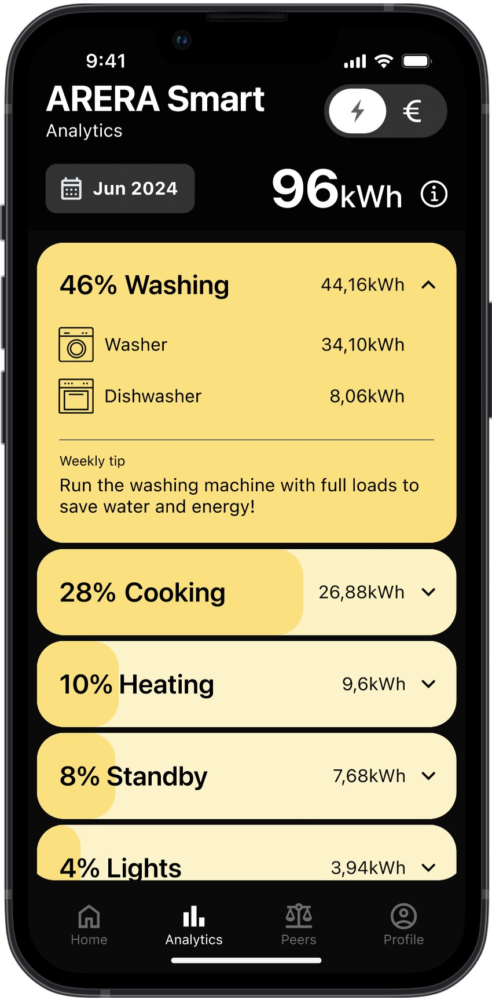
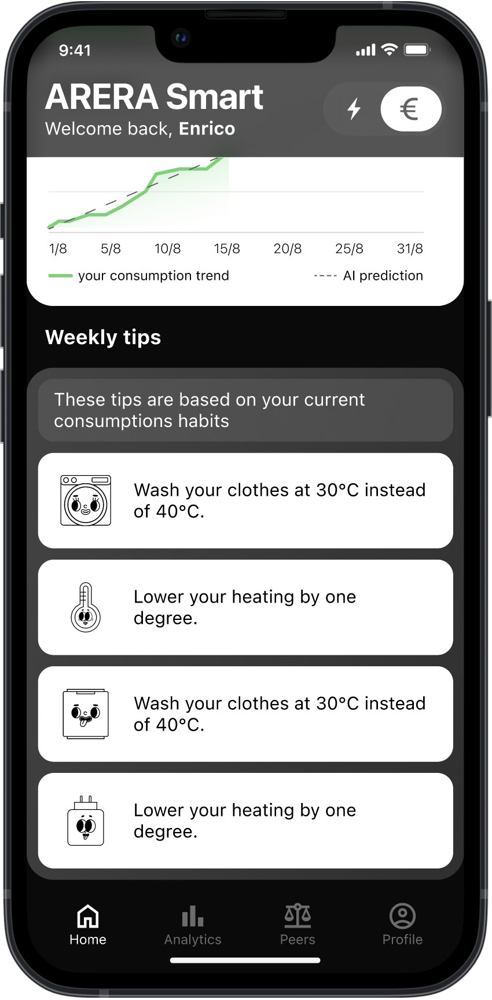
Video